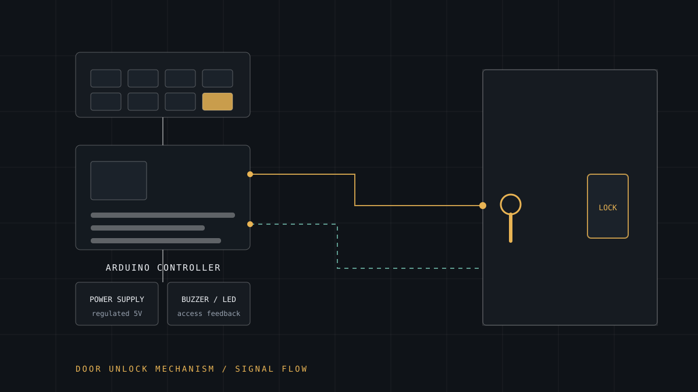

Hardware
Door-Unlocking Mechanism
An Arduino-controlled entry system built around a practical question: how do you give several people access to a shared space without handing out a key that can be copied?

- Role
- Concept, circuit design and firmware
- Domain
- Embedded / physical access control
- Status
- Prototype
- Controller
- Arduino
- Inputs
- Keypad / pushbutton credential entry
- Outputs
- Electric lock actuator · buzzer · LED
- Power
- Regulated supply, separate actuation path
- Related
- OpenGrid Sentinel
Problem
Shared spaces in community settings (a storeroom, an office, a lab) usually rely on a physical key. Keys get copied, lent and lost, and nobody can tell you afterwards who opened the door or when. Rekeying is expensive and rarely happens, so the problem quietly gets worse.
The goal was a mechanism where access could be granted, changed or revoked without touching the hardware.
Why it mattered
This is framed around community benefit rather than home security: the organisations I work with pass keys between volunteers and staff constantly, and every handover is a moment where accountability disappears. The same mechanism that lets you revoke a credential instead of changing a lock is what makes shared resources manageable at scale.
My role
Sole designer and builder across the whole mechanism.
- Defined the credential model and the states of the system: locked, unlocked, denied, alarm
- Designed the circuit, including separating the logic supply from the actuator load
- Wrote the firmware: credential capture, comparison, timeout handling and feedback
- Selected and wired the lock actuator, buzzer and status LEDs
Technical approach
- Credential entry through a keypad or button sequence, read as a bounded input with a clear timeout, so an incomplete entry cannot hold the system hostage.
- Comparison logic held in firmware with a fixed attempt counter, so repeated wrong entries lock the input out for a period rather than allowing unlimited guessing.
- Lock actuation driven through a transistor or relay rather than straight from a GPIO pin, because an actuator's current draw will damage a microcontroller output.
- Timed unlock. The lock releases for a fixed window and re-engages automatically, so a door left ajar cannot leave the mechanism open indefinitely.
- Feedback through buzzer and LEDs: distinct patterns for accepted, denied and locked-out states.
Implementation
The decision that mattered most was electrical, not logical: driving the lock from the microcontroller directly is the obvious mistake and a fatal one. Isolating the actuation path protects the controller and keeps the logic stable while the lock draws current.
- Non-blocking state machine in the firmware (entry collection, verification, unlock window, lockout) instead of nested delays
- Timeouts on both credential entry and the unlocked window, so the system always returns to a known safe state
- Credentials stored as a fixed-size constant in firmware for the prototype, with a clear boundary where a real deployment would need tamper-resistant storage
- Feedback patterns designed to be distinguishable without a display
Deliberate limit: this is a prototype demonstrating mechanism and control logic. A deployment handling real access would need encrypted credential storage, an audit log, tamper detection and fail-safe (not fail-secure) behaviour on power loss. That gap is stated rather than glossed over.
Impact
The prototype establishes the full loop (credential in, decision, actuation, feedback, relock) on commodity hardware, and validates the control pattern used elsewhere in my hardware work.
Its real value is as a design study: it made me write down what a system must do when power fails, when someone guesses repeatedly, or when a door is left open. Those questions apply far beyond door locks.
Challenges
- Actuator current. Solenoid locks draw far more than a GPIO can supply, and the inductive kick on release can reset the board without protection.
- Input debouncing. Mechanical buttons bounce, and a bouncing press looks like several keystrokes, which turns a four-digit code into nonsense.
- State clarity. Without a display, the system has to communicate through sound and light alone, which forced a simple, consistent vocabulary of signals.
- Failure modes. Deciding what happens on power loss is a safety question before it is a programming one, and it changes component selection.
- Security honesty. It is easy to build something that looks secure and is not. Being explicit about the prototype's limits was part of the work.
What I learned
Access control is mostly about the unhappy paths. The happy path (correct code, door opens) is ten lines. Everything that makes the system trustworthy happens when things go wrong.
I also learned that hardware forces a kind of discipline software does not: you cannot refactor a burnt-out pin, so you think harder before you commit.